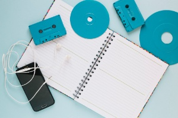

1. Preparación para la grabación en estudio
Objetivo
Asegurarse de que todo esté listo para grabar un episodio de calidad.

Actividades
- Revisión del guion:
- El guionista y el coordinador revisan el guion para asegurarse de que esté completo y bien estructurado.
- Ajustar el guion según las necesidades (por ejemplo, añadir transiciones o efectos de sonido) en la escaleta.
- Preparación de los presentadores/locutores:
- Los locutores ensayan su parte para asegurarse de que hablan con claridad y entusiasmo.
- Practicar la pronunciación de términos técnicos o difíciles.
- Preparación del estudio de grabación:
- Asegurarse de que el estudio esté disponible y listo para usar.
- Probar los micrófonos y el equipo de grabación para evitar problemas técnicos.
- Materiales necesarios:
- Tener a mano el guion impreso o en un dispositivo.
- Preparar los audios de las entrevistas o efectos de sonido que se usarán durante la grabación en un PC o dentro de la mesa de grabación.